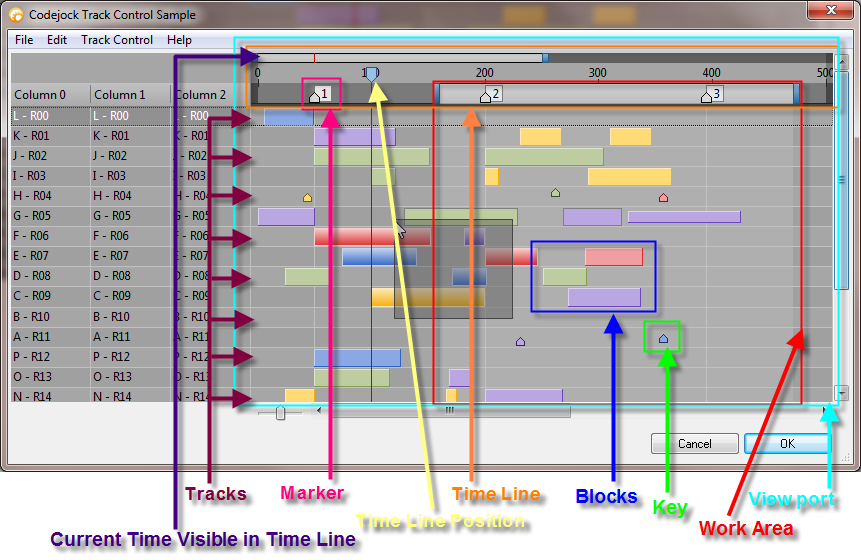

Overview
| Xtreme Report Control ActiveX Control v15.3 |
Track Control
For a list of all members defined in this module, see TrackControl members.
   
|
The Track Control is an extension to the Report Control. It can do basically everything the the Report Control can do with the addition of a Track Control.
What can it be used for?
The use for this new control can be thought of like this: just imagine it as an editor for video, each block is a small clip or video effect or some music track, by moving the blocks you are arranging the order of them.
Or for those into game development, it can be thought of as holding the screen scenes of a video game.
Of course it can be used for any purpose, but those are 2 scenarios where developers in the movie, music or game field could benefit.
What components make up the tack control?
Below is an image that shows the various components that make up the track control.

What Objects, Methods and Properties are used to create tracks in the track control?
The following code is used to work with the components in the track control. All help will be in reference to units of time, but you can think of time units as whatever you wish.
***Note all the code snippets are taken from the COMPLETE sample at the bottom of the topic so that you can see how to initialize the variables, etc...***
Setting the Time Line Bounds, this will set the total length of the time line:
TrackControl.TimeLineMax = 200
TrackControl.TimeLineMin = 0
This code sets the time line with a range of 0 to 200 units of time
Specifying the portion (zoom\scale) of the time line that will be in view, which we call the View Port:
TrackControl.ViewPortMax = 100
TrackControl.ViewPortMin = 0
This code sets the View Port to show only 100 units of time out of the 200 units of time set above.
Specifies the current work area within the time line. This area has it's own scroll bar at the top of the tracks that allows it to be moved as the user desires. The work area is displayed in the shaded area under the work area scroll bar.
TrackControl.WorkAreaMax = 75
TrackControl.WorkAreaMin = 25
This code specifies an work area of 50 units of time. The initial position of the work area will be from 25 units of time to 75 units of time. The user can move this using the scroll bar, as well as adjust the units of time it represents.
The current position of time in the time line is indicated with the Time Line Position.
TrackControl.TimeLinePosition = 50
The time line position tracker simply shows the current position in time, for example, it can be used to show the current time in a movie playing as it progresses through the track.
The Track Control uses a special item type call a TrackControlItem. This item is used to hold blocks and keys. CreateTrackItem will create a new TrackControlItem that can be added to a ReportRecord using the AddItemEx method. Once the TrackControlItem is added to the ReportRecord it will be displayed in the Track Control.
Tracks are what hold the blocks and keys. A track is a special item that is added to a regular ReportRecord.
Dim TrackItem As TrackControlItem
Dim Record As ReportRecord
Dim Block As TrackBlock
Set Record = TrackControl.Records.Add
Record.AddItem 1
Record.AddItem 1
Record.AddItem 1
Set TrackItem = TrackControl.CreateTrackItem
Record.AddItemEx TrackItem
Set Block = TrackItem.AddBlock(False, 15, 25)
The code above adds a track to the track control. It adds 3 normal columns, then it adds a track item. You must first create a track item before you can use it using the CreateTrackItem method. Once it is created you can then add this new track item to the record using AddItemEx. This will add your track so you can then add blocks and keys.
Markers are used for block alignment, blocks can be "snapped" to the left or right of these markers.
Dim Marker As TrackMarker
Set Marker = TrackControl.Markers.Add(20, "0")
Marker.Caption = "1"
TrackControl.Markers.Add 70, "2"
TrackControl.Markers.Add 90, "3"
The code above adds 3 markers to the track control. These markers are placed in the time line at the specified time unit, in this case, at 20, 70 and 90 units of time.
Keys are used simply as "notes" or reference points in the track. They can be added anywhere in the track to make note of some event at the given moment in time.
TrackItem.AddBlock(True, 70, 0)
The code above will add a key at time unit 70, the last parameter, size, is ignored when adding keys. Note the first parameter is True, which tells AddBlock to add a key as opposed to a block.
Blocks are a visual representation of units of time in a track. They can have both a minimum and maximum time period. For example, a given block can represent 25 units of time, but can no less than 15 and no more than 30 units of time.
Dim TrackItem As TrackControlItem
Dim Block As TrackBlock
Set TrackItem = TrackControl.CreateTrackItem
Record.AddItemEx TrackItem
Set Block = TrackItem.AddBlock(False, 15, 25)
Block.MinLength = 15
Block.MaxLength = 30
Block.Color = RGB(255, 219, 117)
The code above adds a block that represents 25 time units. It is placed within the track at 15 time units. Also note the the first parameter of AddBlock is False, which indicates we are adding a block as opposed to a key.
If AllowBlockScale is False, the block will not be able to be resized by the user and MinLength and MaxLength will be ignored.
When AllowBlockRemove is True, blocks can be dragged from one track to a different track. When False, blocks can only be moved within the same track.
AllowBlockMove specifies whether the user can move blocks and keys. When False, keys and blocks can't be moved, but they can be resized\scaled. Use AllowBlockScale to restrict block resizing.
When FlexibleDrag is True, the track control will re-position blocks to allow room for a block to be dragged to the specified location. When False a block can only be dragged to a location if there is enough room to fit the block without moving the others that are already there.
Blocks can also be different different heights and set to different vertical alignments within the track. This is used just as a visual aid to make different blocks in the track visually different from each other.
Block.HeightPercent = 0.5
Block.VerticalAlignment = xtpTrackBlockCenter
The code above simply makes the block 50% the size of the track height and vertically aligns the block in the center of the track.
A block or key uses the Selected property to show when it is selected.
[Track Control Sample (Visual Basic)] This sample shows how to create a simple track control.
Private Sub Form_Load() |